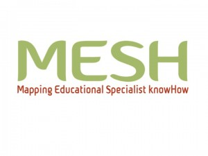

Search the Articles
Search the Case Studies
Search the Membership
Search MirandaNet
MirandaNet Fellowship Article
Membership List | Publications | Research | Specialist Area List | Braided Learning Ejournal
Research worth investigating about ICT and Computing
Christina Preston
Year of posting: 2013
Article
Work in progress. Please email christina@mirandanet.ac.uk with suggestions, recommendations and research questions you would like answered.
Index
- The background to the list
- The categories of research
- Promoting teachers’ research
- Recommended research urls
The background to the list
In the last month I have made significant efforts to crowd-source urls for research into the impact of ICT in teaching and learning through emailing professional organisations and Twitter. Some of the work is free but other recommendations are behind firewalls and require subscriptions to organisations and journals. Access to journal research reports is free if you are signed up to do a Masters or a Ph.D. but for most teachers the time commitment is not realistic.
The submissions also indicate that the funds to undertake large scale national research have been badly hit by the European recession, in particular the UK Coalition government’s closing of the government agencies that funded research, notably Becta. So where can teachers find research?
The categories of research urls
I have looked at what has been sent to me and have divided the research that is available to practitioners into these categories:Research that is freely available from publically funded organisations and charities like IFS and ESRC and EU:
- Free research that is collated and researched by practitioners like the MirandaNet Fellowship case studies and journals;
- Research promoted by the authors who have been completing Masters and Ph.Ds and writing books but may not be free:
- Research by companies and governments who want to promote a policy or product that is often free;
- Research findings that can only be accessed by subscribing to a journal payment or paying a subscription to a professional organisation;
- Access to university libraries through following a course:
- MESH, the service that MirandaNet is partnering that aims to collate teachers’ research and make it available to all (see below)
Promoting teachers’ research
MirandaNet members Professor Marilyn Leask, Dr Sarah Younie and Professor Christina Preston are all on the editorial board of MESH.
This service is tackling fundamental problems for teachers – how to keep up to date and finding quality assured advice on the web as well for educators in developing and disseminating research about the impact of digital technologies on learning. you can also ask new research questions and pathways will be set up to try to answer them. You can learn more about this here.
{kind=link}
If you want to be involved in curating existing research or ask any new research questions about classroom practice you would like to have answered and we will set up a MESH pathway to answer them. Get in touch with Professor Christina Preston who is on the editorial board christina@mirandanet.ac.uk or enquiries@MESHguides.org
Recommended research urls
@sarahyounie
The most comprehensive set of research urls for teachers were sent in by Dr Sarah Younie who is certainly worth following on Twitter. Here are some of them in no particular order:
- Creative Classrooms programme – Review of research into tablet use in classrooms, is now published athttp://creative.eun.org/news/-/blogs/tablets-in-teaching-literature-review-published?_33_redirect=%2Fnews … .
- Check out Thinking About the Flipped Classroom – PrometheanPlanet http://community.prometheanplanet.com/en/user_groups/itecprom/b/itecprom_experts_blog/archive/2013/02/22/thinking-about-the-flipped-classroom.aspx#.UluToUv3lU1.twitter … (from @planet_tweets)
- EIF 2013 Sarah Younie https://audioboo.fm/boos/1623573-eif-2013-sarah-younie?utm_campaign=detailpage&utm_content=retweet&utm_medium=social&utm_source=twittershare … via
@Audioboo - Kennisnet (Dutch Becta-like organisation) publishes an annual report on the state of ICT in NL schools:http://www.kennisnet.nl/fileadmin/contentelementen/kennisnet/Over.kennisnet/Vier_in_balans/Four_in_balance_2013_12.pdf …
- Celstec at the Netherlands OU publishes research on education, see: http://celstec.org/node/52
- Horizon Scanning – What will Higher Ed look like in 2030? See EU papers on “Open Education 2030″ for HE available athttp://is.jrc.ec.europa.eu/pages/EAP/documents/All_OE2030_HE_v%204_author%20revised_OK.pdf …
- See Steve Kennewell (2007) The Use of ICT to Improve Learning & Attainment through Interactive Teaching:http://www.esrc.ac.uk/my-esrc/grants/RES-139-25-0167-A/outputs/read/28f65dc6-360d-461d-85fa-3a23211a54fa …)
- Research-informed Strategies for Moving Education into the Digital Age:Outcomes of International Summit on ICT in Edhttp://onlinelibrary.wiley.com/doi/10.1111/jcal.12035/abstract …
- See research publications of Gerald White on Teaching & Learning using Digital Technologieshttp://www.acer.edu.au/staff/gerry-white/ …
- See methodological innovation in Digital Arts & Social Sciences from the perspective of digital technology:http://midas.ioe.ac.uk
- OU Innovating Pedagogy 2013 report incs: Crowd Learning, Learning from Gaming, Geo-Learning, Digital Scholarship:http://www.open.ac.uk/innovating .
- See Hennessy & London on IWBs & role of prof dev in integrating the technology, in OECD Ed Working Papers No. 89,http://tinyurl.com/OECDIWBS .
- For evolution of computing (née ICT) curriculum during last year’s DFE drafts: see Twining’s ‘bliki’http://edfutures.net/PeterT%27s_bliki … traces the National Curriculum in England, Computing Programmes of study, final statutory orders published today: https://www.gov.uk/government/publications/national-curriculum-in-england-computing-programmes-of-study …
- See book ‘What does our past involvement with computers in education tell us?’http://www2.warwick.ac.uk/fac/soc/wie/research/centre/centre_projects/current_projects/voices/book/voicesbook.pdf …
3rd Millennium Learning Award
Some of the 70+ videos produced by schools are available to the public, They provide a very useful research base. However people who are not members of Naace can only see the videos created for parents.
DERN is the Digital Education Research Network.
DERN is managed by the Australian Council for Educational Research (ACER) in Melbourne, Australia.The latest two weekly research reviews are FREE at Subscribe to Digital Education Research Network (DERN) at here.
EDUsummIT Washington 2013
Edusummit is a global community of researchers, policy-makers and educators committed to supporting the effective integration of Information Technology (IT) in education by promoting active dissemination and use of research.
The mission of this community is to engage policy makers, researchers, educators, and representatives from the corporate sector from across the world in an active dialogue about emerging issues concerning the use of IT in education.
Many of the dialogues that are taking place are also informed by the most recent issue of JCAL, which came out of the previous EduSummIT:
- TWG1: Towards new systems for schooling in the digital age
- TWG2: Advancing mobile learning in formal and informal settings
- TWG3: Professional development
- TWG4: Digital equity and intercultural education
- TWG5: Assessment as, for and of 21st century learning
- TWG6: Advancing computational thinking in 21st century learning
- TWG7: Observatories for researching the impact of IT in education
- TWG8: Digital Citizenship and literacies around the world
Eductech: World Bank
High quality, international research managed by Mike Truncano covering major issues regularly plus links to all the major sources for research and toolkits like InfoDev and the UIS.
The MirandaNet Fellowship Case studies
MirandaNet Fellows have been publishing their practitioner case studies to share with others since 1992.
MirandaNet publications
MirandaNet members list their own research publications and other recommendations that are often freely accessible
ITTE
Membership of ITTE costs £70 a year but Dr Sarah Younie says, “Specifically for schools I have made available a free resource which was an output from some research I led with 5 schools across the East Midlands which investigated whether Web 2.0 technologies could raise literacy and engage disaffected pupils. This was funded by the TDA. On the ITTE site, under Resources, there is a free to download resource ‘Resource for use in Schools for Continuing Professional Development’ – there are the case studies from the research and a Powerpoint with lots of other useful resources to use in a CPD session to upskill teachers of all subjects in using a range of Web 2.0 technologies in their classrooms”.
The Evolutionary Stages of Schooling and Stage Indicators
Mal Lee and Roger Broadie have identified six stages in the evolution of schooling thus far, and within each of the stages a set of indicators; benchmarks that provide schools – at least within the English – speaking world – an international measure that allows them to readily position themselves on the school evolutionary continuum.
Importantly the indicators allow all within the school’s community – and not just the professionals – to both position the school and vitally to quickly identify the kind of variables to be addressed if the school is to evolve as desired.
Any more?
MirandaNet Members can go to the Log on/off area to edit their own articles.
[Back]